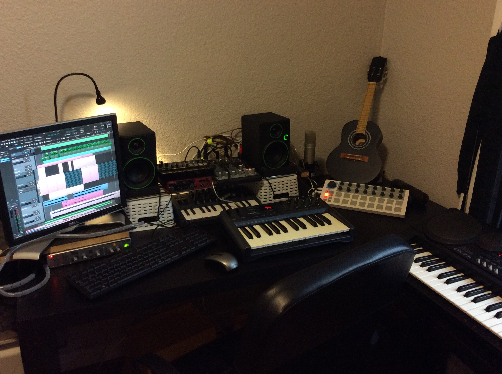
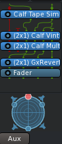
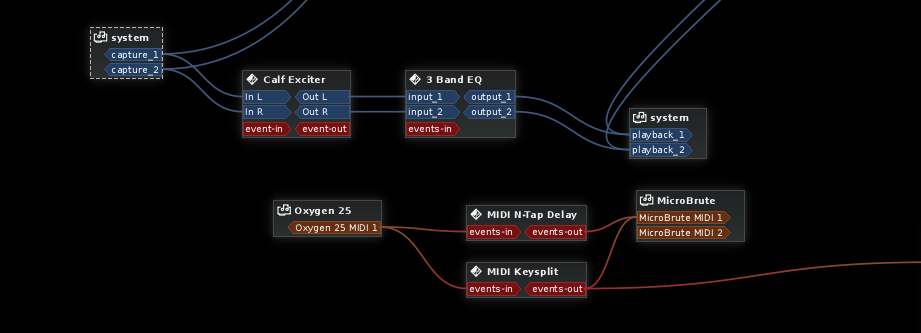
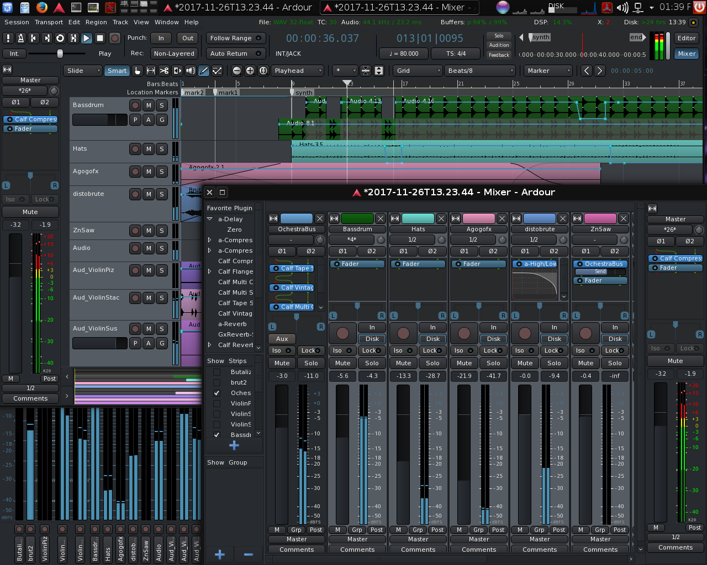

Over this weekend I jumped back into music production, working on some sounds for my current game project. I decided to switch around my work-flow and learn Ardour. Ardour is a totally free software Digital Audio Workstation (DAW) with a professional feature-set for macOS, Windows, and Linux. It has the features you'd expect: multi-track high sample-rate recording, non-destructive editing (NDE) non-linear editing (NLE), VST/LV2 plug-in support for both FX and synths, MIDI and control surface support, and so on. This post describes my impressions using Ardour 5.7 on the (highly recommended) KXStudio 14.04.5 distro of GNU/Linux.
If you want to hear what I made, check it out here:
In this track I am both testing out a new work-flow with Ardour, and some new hardware synths I picked up recently. The drum sounds are being generated by the Korg Volca Beats, and the lead is me getting silly with noodling around with the Arturia Microbrute, which is all kinds of fun. I also use this at a low octave for some drone sounds. I'm using this cheap little DSP multi-effects unit on these sounds to add some reverb. For software, I'm using Amsynth, ZynAddSubFX, and some soundfonts from Sonatina Symphonic Orchestra, all of which are free software.
My DAW journey
I think some context is helpful, since unlike most I am not "coming from" the more popular DAWs like Pro Tools or Ableton. The last proprietary audio software I invested heavily in was Cakewalk Sonar and FLStudio.
Almost couple years ago, after a several year dry-streak, I dove back into audio production with KXStudio, with the rational that I didn't want to invest time in learning a proprietary audio system and have the risk of the "rug" being pulled out from under me. This is a real risk: Only 5 days ago from writing this article, Gibson, the parent company of the Cakewalk Sonar DAW, announced they are completely discontinuing the entire Cakewalk product line! After trying a few options (including BitWig Studio and Ardour), I settled on the dated MuSE DAW, since it's interface resembled Sonar the most.
Over the last few days I decided to give Ardour a serious try, since it is presently the only free software DAW with any serious momentum.

Stuff I liked
Ardour gives a very slick UI to all the fancy stuff you can do in JACK - you get the "connect anything to anything" power of JACK, but with a sane defaults that work for the 90% of the time you just want to stack some FX

Played well with JACK - JACK is probably the coolest thing for Linux professional audio: connect any piece of (virtual or real) hardware to any other piece of (virtual or real) hardware using virtual patches. Ardour has truly managed to balance the flexibility of JACK with a clean and simple UI. For example, add a new FX plug-in to a bus or track, and ins/outs get automatically connected in a linear fashion. You can still set up complicated side-chains if you want, and can manually edit in/out lines for each "rack" unit, but the linear default is what I want 90% of the time.
Fully Lua scriptable - I haven't delved deeply into this, but, unsurprising for a free software package, Ardour seems to have the best scripting support of DAWs on the market, with most of its internal API exposed via Lua. This is a huge plus in terms of potential power of the tool.
Human editable storage format - Ardour uses XML, WAV, and MIDI files to store everything it creates, and quite immediately obvious how to change stuff manually using a text editor. This makes me a lot more confident in using it since even if I encounter crashes or bugs I can recover my work, even if it takes some time.
Consistent UI - Once I understood the UI, it made perfect sense and is very cognitively simple. There are essentially only 2 views: mixer view (which allows for easy modification of effects, buses, and faders etc), and the editor view, which exposes all editing functionality, including piano-roll. It took me a few hours to get used to it, but now I truly appreciate this design decision.
Sessions, snapshots, clip list - Closely related to the file formats, I feel I have very meticulous control with the snapshot system, which saves a duplicate master XML document very cheaply.
Fast export and low system usage - Even on my older studio computer (Dell Optiplex workstation I picked up a couple years ago for about $100 including monitor / keyboard / mouse), everything hums along and the free-wheel export seems quite fast.
Great online documentation - Unlike a lot of free software these days, Ardour has a fantastic online manual
Great controller support - Just a couple clicks to get my M-Audio Oxygen MIDI controller controlling the transport, and Ardour boasts support for all major popular control surfaces.
Great plug-in UI - I'm using Ardour with KXStudio, meaning out of the box it comes with 100s of effects and instruments available. Other DAWs I've used had UI bugs in a few spots where it'd try to generate massive menus, etc, but Ardour has both a great searchable plug-in explorer modal, "favorite" and "hide" features, and even a nice hierarchical menu that sorts them by type and team.
A few more minor things which I noted were done well were: Great UI for tempo and meter changes, the "magic" cursor that can do both non-destructive editing and something else (such as automation editing) based on clicking on either top or bottom of a clip, and, well, a lot of small things that make Ardour a quality, polished piece of professional software.

Wishlist
All-in-all Ardour is a fantastic piece of software, and definitely my favorite DAW, but it's also clear it has quite a bit of room for improvement. Fortunately development is very active so I have no doubt it will quickly shape up in all these areas.
Piano roll - Seriously, the one area that Ardour really lacks is with the Piano Roll interface. While I learned to appreciate the inline design decision for an inline piano-roll, I discovered that independent of that, Ardour's Piano Roll is still lacking some very essential features:
- You cannot edit velocity editing via a graph interface, or "paint crescendos". Yeap, only via menus or keyboard shortcuts can you edit velocity. This makes certain work incredibly tedious, and this one missing feature is a borderline deal-breaker for my work-flow.
- As far as I can tell, no "delete" cursor mode
- Clunky interface for non-note MIDI events e.g. pitchblend
- As far as I can tell, no auto-creation of arpeggios (maybe with Lua scripts?)
- Generally lacking in tools for auto-setting of velocity based on meter (again, maybe with scripts?)
Looping - As far as I can tell, there's no way to make a clip "loopable" where you can just drag it to a new length and it auto-repeats. While this can be easily emulated just by copying and pasting linked copies, it would be nice to have.
Bounce / freeze MIDI to audio - Only audio tracks can be frozen. Fortunately, this is very easy to emulate just by making a new audio track, hooking the outputs of the MIDI instrument to the inputs of the audio track, then recording, but it would be nice if it was 1 click away like it was with audio.
Real-time export - While Ardour 5.7 export dialog is feature-filled and generally excellent, it is noticeably lacking a non free-wheel export feature, which would be nice to avoid having to record hardware synths before exporting the entire project. Again, very easy to do just by connecting the master bus to the input of a track and hitting record, but it would be nice to have a built-in option.
Stability - There was one really annoying bug I encountered more than once while using Ardour: After reloading my project, one of my clips would be missing! Fortunately, it still existed in the editor list as though it was in the project, including its precise location etc, and it seemed just by clicking on it, it would suddenly appear again snapped in the right spot. It was as though it was both hidden and muted, although there was no indication that it was either. Hopefully this bug will be fixed soon since it was very annoying.

Summary
While it still has its fair-share of paper-cuts, I've never been more pleased to overcome my initial distaste for Ardour's design decisions, and with Ardour's very active development I'm sure it's only going to get better and better. Props to the Ardour developers for creating something so great, and to the KXStudio team for packaging the easiest to setup computer audio collection I've ever used!
I'm very glad I spent the time to learn Ardour, and no doubt it will be my DAW of choice for years to come.